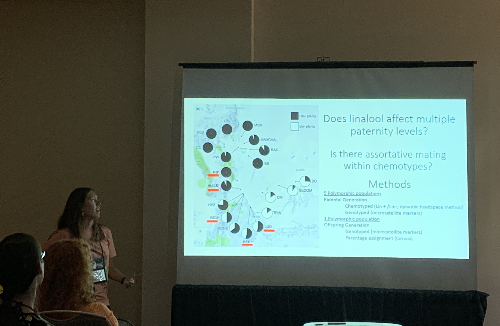

2022 American Society of Plant Taxonomists Graduate Research Grant ($1200)
2022 Northwestern University Conference and Travel Award in Plant Biology and Conservation ($498)
2020 Colorado Native Plant Society Steinkamp Grant ($1000)
2020 Conviron Travel Grant ($500)
2020 American Society of Plant Biologists Conviron Scholar
2017 Honors in Biology, Dept of Ecology and Evolutionary Biology, Brown University
2017 and 2016 Inter-collegiate Sailing Association All Academic First Team
2016 Undergraduate Teaching and Research Award, Brown University ($5000)
Plant Biology and Conservation Departmental Seminar 2021 Recording link
Carter, H., J. Fant, C. Woolridge, and K. Skogen. 2019. Mating dynamics and linalool production in Oenothera harringtonii. Botanical Society of America 2019.
Carter, H. Leafing through the chemistry of Mexican Viburnums: Morphology and chemistry in a case of replicated radiation. Undergraduate Honors Thesis Defense, Brown University 2017. Summer Research Symposium, Brown University 2016.
